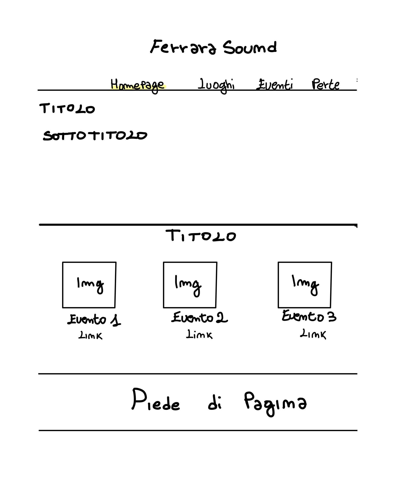
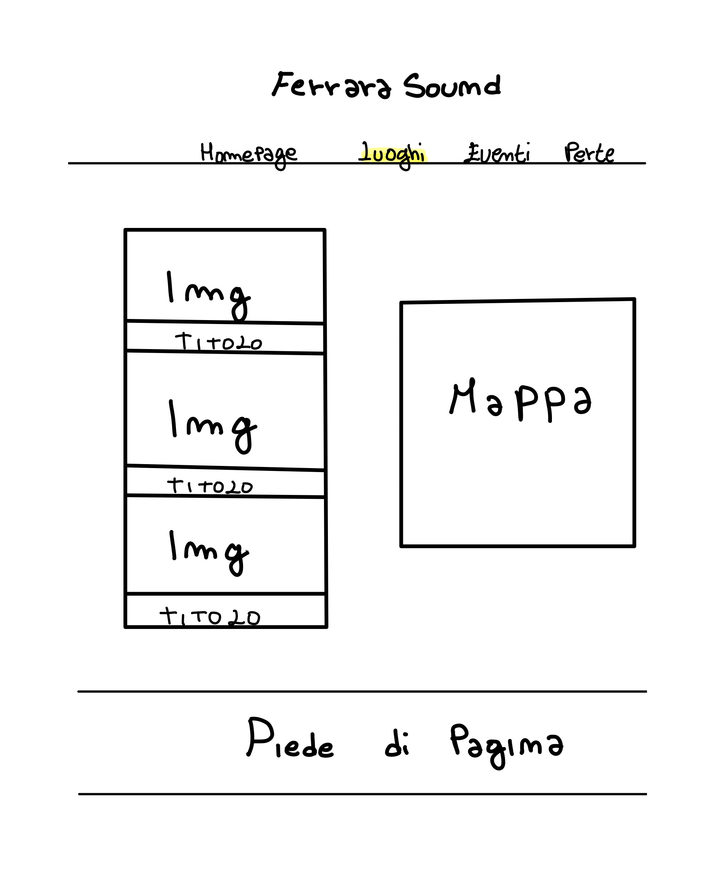
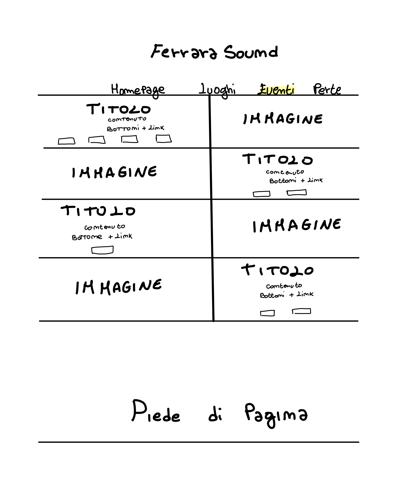
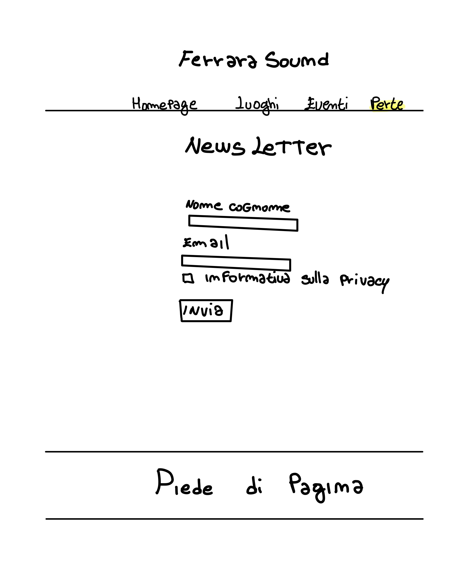
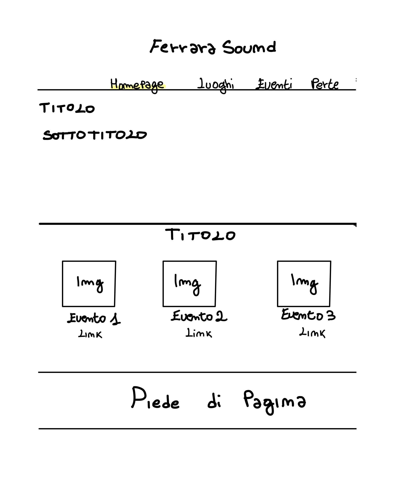
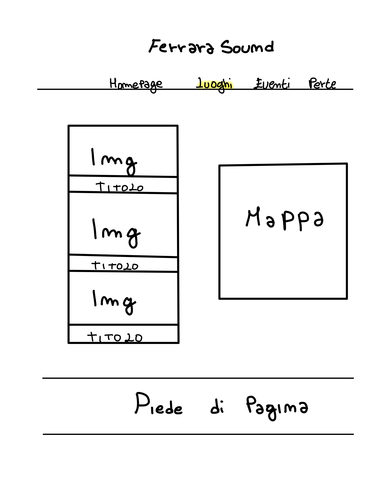
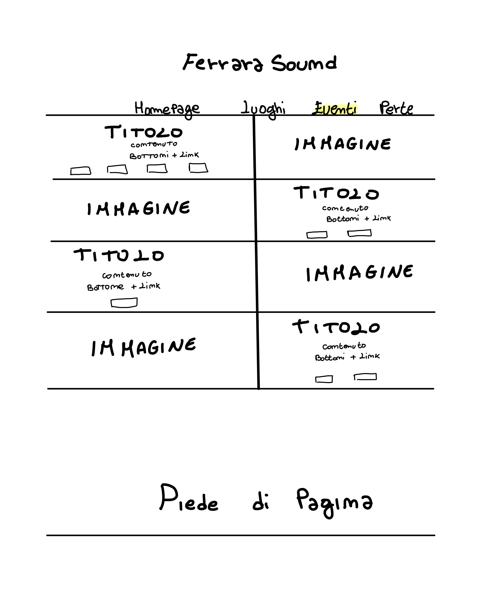
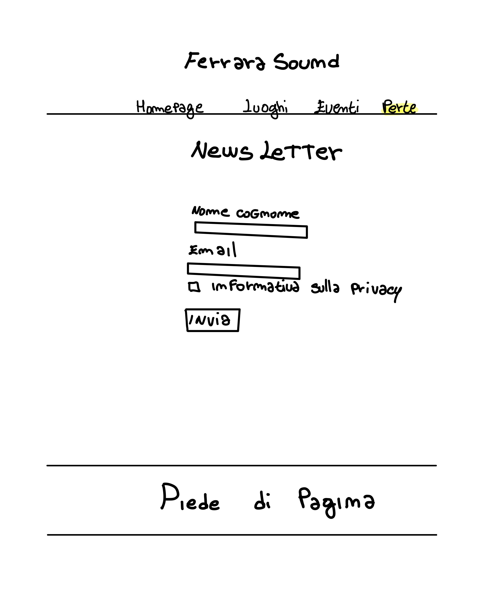

Abstract
Ferrara Sound nasce con l’obiettivo di coinvolgere appassionati di musica in una piattaforma completa e intuitiva per scoprire e partecipare agli eventi musicali più interessanti della città.
Il suo target utente comprende principalmente giovani adulti in visita alla città ma anche residenti locali che disiderano essere più partecipativi negli eventi della comunità .
In conclusione il sito web offre un valore aggiunto significativo rispetto ad altre fonti di informazioni su eventi musicali a Ferrara perché fornisce un esperienza completa in cui gli utenti possono trovare facilmente dettagli su artisti, date, luoghi e acquisto dei biglietti, tutto in un'unica piattaforma.
Project Management Plan
Benchmarking
Obiettivi
Il sito nasce con l’obiettivo di raccogliere in un’unica piattaforma eventi di generi differenti di modo che risulti più facile reperire informazioni che incontrano il gusto personale del fruitore. Il sito si impegna anche a incentivare i giovani ad andare a teatro e i turisti a venire a conoscenza della cultura musicale della città di Ferrara
Target utente
Nel sito è stato individuato un target utente primario che risulta essere la fascia di giovani adulti dai 20 ai 30 anni residenti a Ferrara e non.
Target utente secondario sono i Turisti di tutte le età in visita alla città e appassionati di musica
Competitors
Ferrara Musica: Sito intuitivo e facile da utilizzare che espone esclusivamente eventi di concertistica nei teatri. Il target di riferimento è inoltre ristretto ad una cerchia di utenti di età più avanzata rispetto a quello a cui è indirizzato il sito di Ferrarasound
Ferrara Terra e Acqua: il seguente sito risulta essere ben organizzato e ricco di informazioni. D’altro canto, quest’ultima caratteristica può rappresentare, allo stesso modo, un punto di debolezza data la moltitudine di eventi non musicali descritti che creano confusione nella ricerca selettiva dell’utente. Infine, essendo un sito istituzionale risulta essere molto impersonale e poco ricco di dettagli grafici
Struttura e layout
 







Scelte grafiche
La grafica del sito risulta essere facile ed intuitiva per permettere all'utente di compiere azioni con semplicità.
Sono state utilizzazate due tipologie di Font: un Serif per i titoli e sottotitoli e un Sans Serif per la scrittoria dei contenuti.
Per quanto riguarda i colori la palette scelta spazia su due tonalità principali di rosa scuro che si appoggiano su sfondo color panna.
Per concludere appare chiara la scelta di predilgere elementi visivi come immagini ripetto a contenuti testuali, questo perchè il nostro target di riferimento è un target giovane
Linguaggi e strumenti
HTML, CSS, Template Bootstrap, Fontawesome (icone) , W3school color picker (colori), Canva (grafiche immagini) , Notability (wireframe), Google Font (font) ,Google analytics (monitoraggio), Social Network (promozione), Github (pubblicazione sito), Youtube (video tutorial), sito HTML.it (tutorial)
Communication Strategy
Background
In passato sono stati sviluppati siti che aggregano eventi musicali di diverso genere a livello nazionale, ma spesso manca l'elemento di promozione del territorio, poiché coprono l'intero Paese. Al contrario, a livello locale esistono siti che raccolgono eventi di vario genere, ma spesso sono gestiti da singole organizzazioni per promuovere i propri eventi.
Ferrara Sound si presenta come la soluzione ideale in quanto offre una panoramica completa sugli eventi musicali di vario genere esclusivamente organizzati nella città. Questo approccio consente di enfatizzare e promuovere in modo efficace l'offerta musicale locale, mettendo in luce la ricchezza e la diversità degli eventi che contribuiscono al vibrante panorama musicale di Ferrara
Obiettivi comunicativi
Per Raggiungere gli obiettivi comunicativi sono state fatte scelte che incentivano la promozione social e in particolar modo l'utilizzo della piattaforma Instagram con il fine di raggiungere il target utente precedentemente fissato
• 400 visualizzazioni storie social
• 100 visite al sito
Target Audience
Target Audience principale: giovani Adulti 18-30 anni appassionati di musica e non residenti a Ferrara
• Il nostro pubblico di riferimento è costituito da giovani appena maggiorenni desiderosi di ottenere informazioni sugli eventi di loro interesse in una città diversa da quella di origine.
• Questo gruppo d’interesse è facilmente raggiungibile tramite promozione social, spot televisivi e riviste web date le due generazioni che lo compongono (Gen Z e Millennials)
• Può essere utile nel raggiungimento di questo target una grafica ricca di immagini, una piccola quantità di testo e una newsletter che permetta un servizio più personalizzato sul singolo
• Possibili barriere possono essere sicuramente la scarsa partecipazione dei giovani ad alcune tipologie di eventi come la stagione concertistica a teatro e la difficile diffusine del sito a utenti non residenti a Ferrara che siano interessati a spostarsi per partecipare all’evento
Target Audience secondari: giovani Adulti 18-30 anni appassionati di musica e residenti a Ferrara
•Questo target utente è simile a quello precedentemente descritto solo che si compone di utenti residenti nella città di Ferrara
•Questo gruppo d’interesse è facilmente raggiungibile con le stesse modalità del target utente principale
•Le scelte grafiche sono sempre riconducibili al primo target elencato
•Questo target secondario è più facilmente raggiungibile dato che si colloca spazialmente nello stesso
luogo degli eventi, rimane comunque la difficolta di interessare i giovani ad alcune attività promosse nel sito
Adulti appassionati di musica
•Questo target utente rientra nella categoria di utente casuale che si ritrova a visionare il sito perché tratta di argomenti affini al suo gusto
•Questa tipologia di utente non ha una modalità precisa che favorisce la diffusione ma sicuramente sarà necessaria una promozione anche su giornali, radio o comunque strumenti adatti ad un target di età più elevato
Messaggio
Il messaggio che il sito vuole trasmettere è che è necessaria una maggiore valorizzazione degli eventi sul territorio di modo che si possa promuovere la cultura musicale Ferrarese anche nelle altre città.
Il nostro target avrà l'opportunità di scoprire una vasta gamma di eventi, precedentemente sconosciuti, grazie alla facilità e immediatezza con cui potrà accedere alle pagine di acquisto dei biglietti sul nostro sito.
Una volta che il messaggio è stato recepito, ci aspettiamo che il nostro pubblico si impegni attivamente nel promuovere la città, incoraggiando sempre più turisti a partecipare agli eventi e contribuendo così a diffondere l'attrattiva della destinazione.
Promozione
•Storie e post su Social
•Passa parola e diffusione diretta
•Condivisone link su whatsapp
Valutazione dei risultati